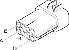

D5A Front / ABS couping ( FRONT )
- Path
- Electrical equipment > Connectors > D Intermediate couplings > D5 Front / ABS couping > D5A Front / ABS couping ( FRONT )
- Kind
- connector pinout (pin -> wire colour -> other end)
- Applies to
- engines: 1.6 TS , 1.8 TS, 2.0 JTS, 2.5 V6, 3.2 V6, 1.9 JTD 8v , 1.9 JTD 16v, 2.0 JTS, 2.4 JTD 10v, 2.4 JTD 20v; production: da 02/00 a 01/01, da 02/01 a 02/02, da 03/02 a 09/03, da 10/03
- Interactive page
- https://sloeber94.github.io/elrnDB-a156/en/#/3235621
Applies to: engines: 1.6 TS , 1.8 TS, 2.0 JTS, 2.5 V6, 3.2 V6, 1.9 JTD 8v , 1.9 JTD 16v, 2.0 JTS, 2.4 JTD 10v, 2.4 JTD 20v; production: da 02/00 a 01/01, da 02/01 a 02/02, da 03/02 a 09/03, da 10/03

Wiring | Colour |
|---|---|
NERO (black) |